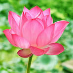

Assignment No. - 5
7 types of flowers
Tulips
One of the most common meanings associated with the tulip is perfect and deep love. Perhaps this originated with the love people had for these flowers as early as 1000 AD and the subsequent “tulip mania” phenomenon. Some say that this meaning stems from Persian folklore, and the tragic love story of Farhad and Shirin.
Lotus

he lotus flower meaning varies from culture to culture. In general, however, the lotus commonly serves as a sacred for purity, rebirth, and strength. Because lotuses rise from the mud without stains, they are often viewed as a symbol of purity.
Rose
The rose scent is one of the flower's most treasured characteristics. Greeks and Romans made perfume from roses, and to this day, their scent is an important element in many of the world's best and most successful perfume blends. Centifolia and damask roses are the most common choices used to make perfume.
Lily
They are often associated with purity, renewal, and transience. In Christianity, the Madonna Lily represents the Virgin Mary's purity. The lily is the national flower of Italy and is featured on the country's emblem. It symbolises unity and peace.
Sunflower
Many people see sunflowers as a spiritual flower. This is because of their similar appearance to the sun and the fact that they're always trying to find the light. So sunflowers are very popular with various religions as they symbolise loyalty and following god or their spiritual guide.
Orchid
The reproductive parts of an orchid flower are unique in that the stamens and style are joined to form a single structure, the column. Instead of being released singly, thousands of pollen grains are contained in one or two bundles called pollinia that are attached to a sticky disc near the top of the column.
Sunflower
Many people see sunflowers as a spiritual flower. This is because of their similar appearance to the sun and the fact that they're always trying to find the light. So sunflowers are very popular with various religions as they symbolise loyalty and following god or their spiritual guide.